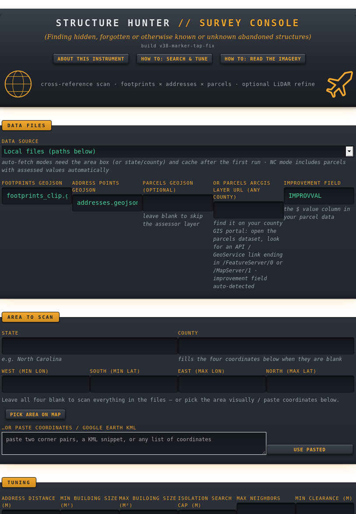

Structure Hunter cross-references what is physically on the ground against what is officially registered — and surfaces the structures that exist in one but not the other.
Forgotten homesteads. Unregistered outbuildings. Structures hidden under tree canopy. The ghost of a foundation in bare-earth LiDAR. All from public data, running on your own machine.
A building footprint shows what's there. An address point and a tax parcel show what's registered. Usually they agree. Structure Hunter is built for the moments they don't — a structure standing on the ground that no record will admit exists.
Every stage is built to separate signal from noise — to tell a real hidden structure from an ordinary house, a tree, or a storage tank.
For every building, it finds the nearest registered address. No address close enough? That structure is unclaimed — a candidate. Fast nearest-neighbor search over a spatial grid.
Builds a bare-earth model from aerial laser point clouds and flags smooth, raised, building-shaped objects the footprint maps never recorded — including ones beneath bare winter canopy.
Re-light and stretch the terrain instantly in your browser — sun angle, vertical exaggeration, hillshade, multi-directional, and sky-view shading — to pull faint foundations and earthworks out of the ground.
Round storage tanks are building-sized and fool every other filter. Geometric descriptors — circularity and convex-hull solidity — flag lone circles as tanks while keeping any circle with structure attached.
A fast pre-pass measures how far registered buildings sit from their address in your area, shows the distribution as a histogram, and recommends your threshold — so you tune from real data, not guesswork.
Find structures with no registered neighbors and no other building within a set distance — the signature of something standing genuinely alone. Stack it with size and shape for a precise target.
A brushed-steel control panel that runs as a local web app — define an area, choose a public data source, and run a scan. No accounts, no cloud, no data leaving your machine.

The survey console — data sources, tuning, isolation filters, and LiDAR refine.
No black boxes. The methods are the same ones used in serious GIS and archaeological survey — and the tool explains every one of them inside its own panels.
Subtract the bare-earth surface from the top-of-everything surface to get height above ground; buildings rise as flat plateaus, trees as ragged ones.
The height variation across a blob separates smooth roofs from scattered foliage — the core building-versus-vegetation signal.
Shade each point by how much open sky it can see, with no directional bias, to reveal subtle pits, mounds, and edges archaeologists look for.
A monotone-chain hull measures how notch-free a footprint is, distinguishing a clean circular tank from a circle with an annex.
Polygon area and centroid straight from the vertices, feeding a grid spatial index that keeps nearest-address queries fast.
The registration cutoff is measured from the data's own distribution, not assumed — and re-measured for every area you scan.
Structure Hunter is for historical and archaeological survey, research on your own property, land and conservation work, and education. Findings are candidates for a closer, lawful look — never conclusions. It is not for trespass, surveillance, or targeting anyone. "No record" often just means "not yet mapped," which is exactly where forgotten places hide.
Install Ruby, download the repo, run one command, open your browser. The README walks you through everything.
View on GitHub